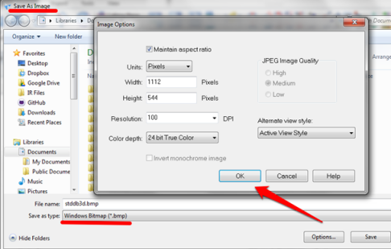
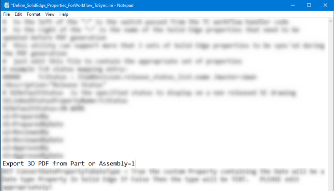

Translate files from the command line
The SolidEdgeTranslationServices.exe translation utility translates Solid Edge files from the command line. The utility is located in the directory \Program Files\Siemens\Solid Edge 2023\Program. Using the translation utility, you can create a Windows scheduled task to automate the conversion of your Solid Edge draft files to PDF files overnight, create a utility to convert Solid Edge files directly from Windows Explorer, and more.
The following are the parameters available for the translation utility:
|
Parameter |
Specifies |
|---|---|
|
-i |
Input file |
|
-o |
Output file |
|
-t |
The format to which to convert, such as .pdf, .tif, .dwg, .jt, and so on |
|
-w |
Width |
|
-h |
Height |
|
-r |
Resolution (100, 200, 300, 600, 1200) |
|
-c |
Color depth (1, 8, 24 where 1=Monochrome, 8=256 Colors, 24=True Color) |
|
-v |
Visibility of Solid Edge (True, False) |
|
-q |
Image quality (Low, Medium, High) |
|
-m |
Multiple sheets (True, False) |
The -t parameter supports the following conversion formats and file types.
|
Solid Edge 2D Draft File Types |
Solid Edge 3D Model File Types |
|---|---|
|
Adobe Acrobat (.pdf) |
ACIS (.sat) |
|
AutoCAD (.dwg) |
Adobe Acrobat [2D and 3D] (.pdf) |
|
AutoCAD (.dxf) |
CATIA V4 (.model) |
|
JPEG image (.jpg) |
IGES (.igs) |
|
IGES (.igs) |
JPEG (.jpg) |
|
MicroStation (.dgn) |
JT (.jt) |
|
TIFF image (.tif) |
Parasolid (x_t) |
|
Windows Bitmap (.bmp) |
STEP (.stp) |
|
Windows Enhanced Metafile (.emf) |
STL (.stl) |
|
TIFF image (.tif) |
|
|
VRML (.wrl) |
|
|
Windows Bitmap (.bmp) |
|
|
XGL (.xgl) |
|
|
XML (.plmxml) |
To use the command line translator, you must supply at least the input file (-i), output file (-o), and the type of file to which you want to convert (-t). For example:
SolidEdgeTranslationServices.exe -i=”C:\Program Files\Solid Edge 2023\Trainingstddb3d.dft” -o=C:Temptest.pdf -t=pdf
If your file path names contain spaces, you must surround the path with double quotes ” “.
To determine what options are appropriate for your file translation, open Solid Edge, manually create a file translation, and note the available options. For example, we reviewed the Save As Image options:

When comparing these options to the command line options, we can determine that the following would be appropriate options for the command line, as each option can be selected and set within Solid Edge:
-
–w = width
-
–h = height
-
–r = resolution (100, 200, 300, 600, 1200)
-
–c = color depth (1, 8, 24 where 1=Monochrome, 8=256 Colors, 24=True Color)
However, the option JPEG Image Quality is not selectable for a Windows Bitmap so the following command line option would not be appropriate:
–q = image quality (Low, Medium, High)
To generate 3D PDF files with this utility, you must first enable 3D PDF in the file C:\Program Files\Solid Edge \Program\Define_SolidEdge_Properties_ForWorkflow_ToSync.ini by editing the file and setting Export 3D PDF from part or Assembly=1. If this option does not exist, you can manually edit and add the option at the end of the file. Without this setting, PDF files generated from Solid Edge models will be 2D PDFs:

How do I
Translate files into Solid EdgeMake a base feature